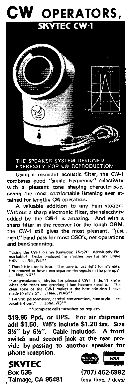
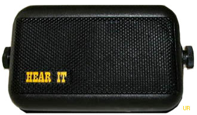
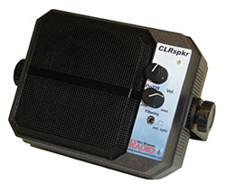
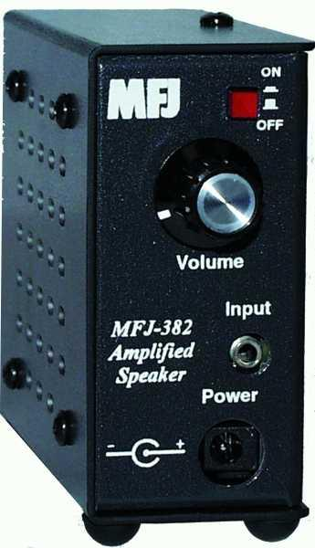

Safe Speaker Mounting
There is a reason this section comes first, and that reason is safety. Mounting speakers anywhere near one's head is fraught with serious issues that almost no one thinks about. For example, one popular mounting location utilizes the headrest support posts, which places them within side airbag reach. Further, headrests are designed to snap off in certain collision events, and speaker mounting interferes with this function.
Sound pressure levels can be deceiving, especially in a noisy environment like the interior of a vehicle. And, contrary to popular belief, it isn't just the low frequencies which can damage your hearing. The high-frequency hash we all put up with when listening to weak SSB signals is just as annoying and deaf-producing.
Here's a simple self-test you can carry out on your own. No matter where your speaker is mounted, after about 10 minutes of listening, just turn off the radio. If you suddenly feel like you're in an insulated soundproof booth, chances are your speaker volume setting is too high.
Here's a suggestion to minimize the hash: place the speaker under the front driver's seat, pointing upward. This tends to increase the bass response while muffling the high-frequency hash. Up under the dashboard pointing into the foot well works almost as well. Either way, you'll end up using less audio gain, which is a good thing in more ways than one.
The same hearing issues (high-frequency hash primarily) are present when using a vehicle stereo system as a communications speaker. Irrespective of any equalizer controls, both low and high frequency response cannot be tailored narrowly enough for communications use. It is a stopgap solution at best.
Basics: Passive Audio Filters

Passive audio filters have been around for many years. The Skytec CW-1, made during the 1970s, is a good example. It utilized a ported 2-inch speaker mounted in a tuned cavity made from thin-wall PVC pipe. At the mouth was a little sleeve you could adjust to set the center of the bandpass. If your receiver didn't have a CW filter, this little jewel worked fairly well. It sold for about $20 at the time.
Discrete-component passive filters for SSB have also been produced over the years by just about every manufacturer of amateur equipment. When these units were first introduced, few radios had built-in bandpass or IF shift features, to say nothing of the DSP systems we have nowadays.
Unlike the CW filter mentioned above, most of these designs used a combination of inductors and capacitors built into a station speaker. Note an important detail from the SP-20 schematic: the passive elements are in series with the speaker. This is good reason — shunted elements directly across single-ended audio amplifiers can cause them to fail. Impedance matters here. A typical communications speaker presents 8 ohms to the audio amplifier; a passive filter network changes that impedance, and a poorly designed one can present a very low impedance on certain frequencies, potentially stressing the output transistors.
The biggest drawback to passive filters is their insertion loss: 3 to 5 dB depending on the design. If your mobile transceiver is already lacking in the audio output department, a DSP and/or powered speaker is a better choice. Passive filters trade signal level for selectivity — useful only if you have signal to spare.
DSP Speakers

Both IF and AF-based Digital Signal Processors (DSP) have become a mainstay of every currently available mobile transceiver. Some are very good at reducing perceived noise, some are so-so, and a few are nearly worthless. This has spawned a variety of companies introducing DSP-equipped, powered speakers.
All of these devices do a credible job of removing unwanted background artifacts like pops and static crashes. They typically outperform built-in audio-based DSP units. However, none of them are as good as a properly designed IF DSP. The main reason is that most built-in IF units are placed in the AGC loop — as a result, nearby large signals don't overload them.

The Hear It unit, marketed by GAP, is a popular DSP speaker with a wide range of DSP settings. It sells for about $200, complete with a headphone jack and fused power cord. West Mountain Radio sells the ClearSpeech, which has a larger speaker than its competitors and more bass response. BHI in England makes the DSPKR with 10 watts of power, which should go a long way in noisy environments. Incidentally, BHI makes most of the private-labeled DSP speakers sold in the US.
There is no argument about the usefulness of DSP speakers, as long as you don't mind the additional level of complexity. They do require DC power which must be switched on and off, and they must be positioned to allow operation of their controls.
Using the accessory jack to power external DSP speakers isn't a good idea. The limiting factor isn't necessarily the current rating (typically one amp). Rather, it is the voltage drop through the radio — as much as 2 volts in some cases. This can cause some powered speakers to operate erratically. Run powered speakers from a direct, switched 12-volt source with their own fusing.
Non-DSP Powered Speakers

The audio output in modern transceivers seldom tops 3 watts, which is barely adequate especially in a noisy mobile environment. Fortunately, several companies make amplified speakers, including the MFJ-382, which sells for under $40. Midland, Cobra, and Shakespeare also offer amplified speakers for about the same price.
Occasionally, you'll find old Motorola HSN1000B amplified speakers at hamfests for as little as $10. New ones cost about $75. They are amazing performers as long as the speaker cone hasn't deteriorated — caveat emptor.
Plain Old Speakers
There is nothing wrong with plain old speakers. However, there are a few things to consider when selecting one.
First, price means nothing. Some really cheap speakers will outperform ones costing ten times as much. One of the reasons for this is that expensive speakers tend to have a much wider bandwidth (high frequencies especially) than cheaper ones, and they're typically larger in size. While they might sound fuller at home, when you're mobile you need all the definition you can get.
Conversely, you don't want one too small or you won't have enough bass response, and the highs will be accented, which reduces readability. Because each person's hearing is slightly different, you should attempt to try before you buy. Just don't buy one smaller than 3×5 inches. Those tiny 2-inch jobs don't sound very good unless you mount them very close to your ear — something you absolutely should not do.
Speaker impedance in communications applications is almost universally 8 ohms. Verify the impedance rating of any speaker before connecting it to a transceiver's speaker output. Connecting a 4-ohm speaker to an amplifier designed for 8 ohms doubles the current draw and will destroy the output transistors. Connecting a 16-ohm speaker reduces the output power but won't damage anything.
Modern Considerations
Digital signal processing technology has advanced considerably since the products mentioned in this article were current. Modern DSP speaker products use more sophisticated algorithms, and some offer adjustable filter profiles optimized for specific modes (CW, SSB, digital). The fundamental advice here remains valid: IF DSP in the transceiver outperforms external AF DSP, and neither is a substitute for proper noise suppression at the source.
Bluetooth-connected headsets and speakers have become popular, but be aware of latency. Bluetooth audio codecs introduce anywhere from 40 to 300 milliseconds of delay. For half-duplex voice communication this is generally not noticeable, but for CW or digital modes, the latency can be disorienting. Aptx Low Latency codec (aptX LL) reduces this to about 40 ms, which is usually tolerable.
In-ear monitors (IEMs) with noise isolation are an excellent choice for mobile operation. A well-fitting IEM reduces ambient cabin noise passively (20 to 30 dB attenuation in some cases), which means you can run lower speaker volume to achieve the same subjective loudness — dramatically reducing the hearing fatigue that comes from long mobile sessions. Use IEMs rated for communications or music; avoid consumer-grade earbuds that boost bass, as the added low-frequency coloration makes SSB voice less intelligible.